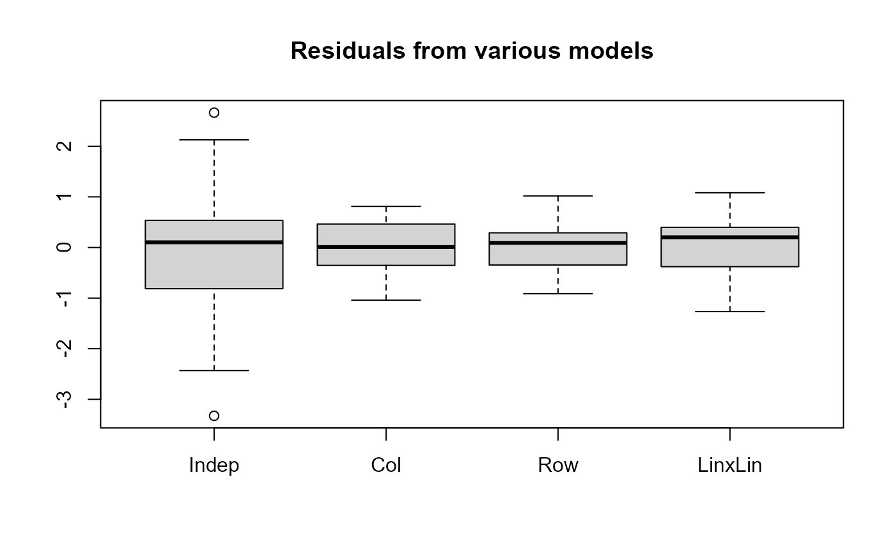

Create a Model List Object
glmlist.Rdglmlist creates a glmlist object containing a list of fitted glm objects with their names.
loglmlist does the same for loglm objects.
The intention is to provide object classes to facilitate model comparison,
extraction, summary and plotting of model components, etc., perhaps using
lapply or similar.
There exists a anova.glm method for glmlist objects. Here,
a coef method is also defined, collecting the coefficients from all models in
a single object of type determined by result.
Arguments
- ...
One or more model objects, as appropriate to the function, optionally assigned names as in
list.- object
a
glmlistobject- result
type of the result to be returned
Details
The arguments to glmlist or loglmlist are of the form value or name=value.
Any objects which do not inherit the appropriate class glm or loglm are excluded, with a warning.
In the coef method, coefficients from the different models are matched by name in the list of
unique names across all models.
Value
An object of class glmlist
loglmlist, just like a list,
except that each model is given a name attribute.
Examples
data(Mental)
indep <- glm(Freq ~ mental+ses,
family = poisson, data = Mental)
Cscore <- as.numeric(Mental$ses)
Rscore <- as.numeric(Mental$mental)
coleff <- glm(Freq ~ mental + ses + Rscore:ses,
family = poisson, data = Mental)
roweff <- glm(Freq ~ mental + ses + mental:Cscore,
family = poisson, data = Mental)
linlin <- glm(Freq ~ mental + ses + Rscore:Cscore,
family = poisson, data = Mental)
# use object names
mods <- glmlist(indep, coleff, roweff, linlin)
names(mods)
#> [1] "indep" "coleff" "roweff" "linlin"
# assign new names
mods <- glmlist(Indep=indep, Col=coleff, Row=roweff, LinxLin=linlin)
names(mods)
#> [1] "Indep" "Col" "Row" "LinxLin"
LRstats(mods)
#> Likelihood summary table:
#> AIC BIC LR Chisq Df Pr(>Chisq)
#> Indep 209.59 220.19 47.418 15 3.155e-05 ***
#> Col 179.00 195.50 6.829 10 0.7415
#> Row 174.45 188.59 6.281 12 0.9013
#> LinxLin 174.07 185.85 9.895 14 0.7698
#> ---
#> Signif. codes: 0 '***' 0.001 '**' 0.01 '*' 0.05 '.' 0.1 ' ' 1
coef(mods, result='data.frame')
#> Indep Col Row LinxLin
#> (Intercept) 4.18756842 4.8631072 4.7061332 3.37942319
#> mental.L 0.04507501 0.6795332 -0.6818052 -0.66051890
#> mental.Q -0.30073728 -0.3233129 -0.3277282 -0.32176183
#> mental.C 0.39412292 0.3936983 0.1992104 0.39415885
#> ses.L -0.04968094 -1.0342736 0.5629992 -0.99933120
#> ses.Q -0.30335318 -0.5581022 -0.3328887 -0.33029582
#> ses.C -0.19797985 -0.1707521 -0.1979530 -0.19811915
#> ses^4 0.17490822 0.1230409 0.1749295 0.17494245
#> ses^5 0.14682648 0.2429662 0.1468266 0.14682693
#> ses1:Rscore NA -0.4459213 NA NA
#> ses2:Rscore NA -0.4594090 NA NA
#> ses3:Rscore NA -0.3342208 NA NA
#> ses4:Rscore NA -0.2814884 NA NA
#> ses5:Rscore NA -0.1393421 NA NA
#> ses6:Rscore NA NA NA NA
#> mentalWell:Cscore NA NA -0.3068185 NA
#> mentalMild:Cscore NA NA -0.1617300 NA
#> mentalModerate:Cscore NA NA -0.1433864 NA
#> mentalImpaired:Cscore NA NA NA NA
#> Rscore:Cscore NA NA NA 0.09068661
#extract model components
unlist(lapply(mods, deviance))
#> Indep Col Row LinxLin
#> 47.417847 6.829334 6.280761 9.895124
res <- lapply(mods, residuals)
boxplot(as.data.frame(res), main="Residuals from various models")
